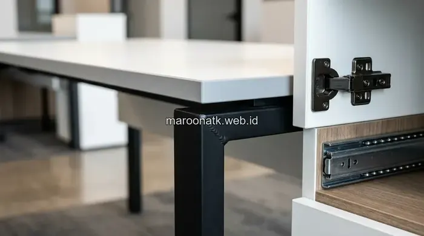

Memilih material yang tepat menjadi faktor penentu keawetan furniture kantor, terutama saat pengadaan furniture kantor dilakukan dalam jumlah besar untuk ratusan karyawan. Kesalahan memilih particle board berkualitas rendah berisiko membuat meja kerja dan lemari arsip cepat melengkung serta harus diganti dalam waktu singkat, sehingga justru melipatgandakan beban anggaran modal (CapEx) perusahaan.
Mengapa Pemilihan Material Menentukan Keawetan Furniture Kantor?
Pemilihan material menentukan keawetan furniture kantor karena setiap jenis bahan memiliki tingkat ketahanan berbeda terhadap beban harian, tingkat kelembapan udara, dan suhu ruangan kerja.
Furniture yang salah material, misalnya particle board tipis 12mm yang dipaksa menahan monitor ganda dan perangkat CPU setiap hari, akan lebih cepat melengkung (sagging) atau rontok sambungan sekrupnya dibanding furniture berbahan plywood maupun kayu solid dengan spesifikasi teknik setara.

Tren Material Ramah Lingkungan untuk Custom Furniture Kantor Masa Kini
Kenali material berkelanjutan bambu laminasi, kayu bersertifikasi FSC, dan daur ulang demi target ESG perusahaan.
Apa Saja Jenis Material yang Umum Digunakan dalam Pengadaan Furniture Kantor?
Berikut beberapa jenis material yang paling umum digunakan vendor furniture kantor di Indonesia beserta karakteristik teknis utamanya:
1. Particle Board (Papan Partikel)
Particle board terbuat dari serbuk kayu gergaji yang dipadatkan menggunakan resin perekat kimia di bawah tekanan tinggi. Keunggulan utamanya adalah biaya produksi yang sangat ekonomis dibanding kayu olahan lain.
Namun, kelemahan mendasarnya adalah ketahanan terhadap air yang sangat rendah. Pada ruangan tanpa AC terus-menerus atau daerah dengan kelembapan tinggi, partikel kayu di dalamnya mudah mengembang, rapuh, dan melepaskan sekrup engsel jika terkena tumpahan air minum.
2. Plywood (Kayu Lapis / Multipleks)
Plywood tersusun dari lembaran-lembaran tipis kayu solid (veneer) yang disusun bertumpuk secara bersilangan arah serat (cross-grain), lalu direkatkan dengan lem berkekuatan tinggi. Struktur silang ini membuat plywood sangat stabil, kokoh menahan beban berat, dan tidak mudah melengkung meski digunakan bertahun-tahun pada meja kerja staf berintensitas tinggi.
3. Medium Density Fibreboard (MDF)
MDF dibuat dari serat kayu halus yang dicampur lilin dan resin perekat, menghasilkan permukaan yang sangat padat, rata, dan halus tanpa pola serat. Material ini sangat ideal untuk profil furniture berukir atau permukaan yang dicat duco, namun memerlukan perlindungan laminasi menyeluruh agar tidak menyerap kelembapan udara.
4. Kayu Solid (Solid Wood)
Kayu solid alami menawarkan ketahanan struktural dan umur pakai paling panjang hingga puluhan tahun. Material ini umum diaplikasikan pada furniture representatif seperti meja direksi executive, credenza ruang VIP, atau meja rapat dewan komisaris, meskipun memiliki bobot berat dan anggaran pengadaan premium.
5. Finishing HPL (High Pressure Laminate)
Finishing HPL adalah pelapis permukaan berkepadatan tinggi yang tahan gores, tahan panas cangkir kopi, dan anti-noda cairan kimia. HPL umumnya dipadukan pada substrat plywood atau MDF untuk menghadirkan ketahanan maksimal dan estetika modern bertekstur kayu alami.

Meja kantor custom berbahan kayu solid yang awet untuk kebutuhan pengadaan furniture kantor ruang pimpinan dan eksekutif.
Bagaimana Perbandingan Material Furniture Kantor?
Tabel komparasi teknis berikut merangkum karakteristik utama masing-masing material untuk membantu tim procurement dan General Affairs menentukan spesifikasi penawaran vendor yang tepat:
| Material | Ketahanan | Harga Relatif | Cocok Untuk |
|---|---|---|---|
| Particle Board | Rendah terhadap kelembapan | Ekonomis | Furniture ringan, penggunaan jangka pendek ≤2 tahun |
| Plywood | Tinggi, tahan beban & lembap | Menengah | Meja kerja staf, partisi workstation, credenza dokumen |
| MDF | Menengah, perlu finishing kedap | Menengah | Furniture dekoratif dengan lekukan atau detail custom |
| Kayu Solid | Sangat tinggi, usia pakai puluhan tahun | Premium | Meja direktur, meja rapat representatif, ruang eksekutif |
Apa Kesalahan Umum saat Menilai Kualitas Material Furniture Kantor?
Kesalahan umum pertama adalah tidak meminta sampel potongan material (mock-up piece) atau spesifikasi ketebalan core board secara tertulis dalam kontrak pengadaan. Tanpa kejelasan spesifikasi, vendor nakal bisa mengirimkan particle board berkepadatan rendah berbungkus stiker PVC tipis yang menyerupai HPL.
Kesalahan kedua adalah hanya membandingkan nominal harga awal per unit tanpa memperhitungkan biaya penggantian dini, perbaikan berulang, dan waktu kerja staf yang terganggu ketika meja melengkung. Perhitungan Total Cost of Ownership membuktikan bahwa berinvestasi pada material plywood grade tinggi menghemat pengeluaran perusahaan hingga 40% dalam horizon 5 tahun.

Layanan One-Stop Pengadaan Furniture Kantor Custom Maroon ATK
Sistem konsolidasi pengadaan furniture kantor dengan monthly invoicing, gratis instalasi, dan sertifikasi BAST resmi.
Bagaimana Melanjutkan ke Tahap Pengadaan Furniture Kantor yang Tepat?
Setelah menentukan spesifikasi material yang sesuai dengan kebutuhan fungsional dan ketersediaan anggaran, langkah berikutnya adalah berkonsultasi dengan konsultan interior dan vendor pengadaan terpercaya untuk menyelaraskan dimensi dan tata letak ruang kerja.
MAROON ATK menyediakan layanan pengadaan furniture kantor custom dengan fleksibilitas pemilihan material berkualitas, mulai dari multipleks berlapis HPL anti-gores, edging ABS tebal mesin otomatis, hingga kayu solid bersertifikasi resmi untuk ruang VIP dan eksekutif.
Tinjau pilihan model dan konfigurasi furniture selengkapnya di katalog furniture kantor MAROON ATK, atau pelajari rekam jejak dan kapabilitas workshop kami di halaman tentang kami sebelum menentukan mitra kerja sama.
Pertanyaan yang Sering Diajukan
Kayu solid dan plywood grade tinggi tergolong paling awet karena tahan terhadap kelembapan dan beban berat, meski particle board bisa jadi pilihan ekonomis untuk penggunaan ringan.
Particle board kualitas rendah mudah menyerap air dan melengkung terutama pada ruangan lembap, sehingga lebih rentan rusak dalam waktu singkat.
Plywood dibuat dari lapisan kayu solid yang direkatkan sehingga lebih kuat menahan beban, sedangkan MDF terbuat dari serat kayu halus yang lebih rata namun kurang tahan terhadap kelembapan tinggi.
Harga awal memang cenderung lebih tinggi, namun secara Total Cost of Ownership justru lebih hemat karena furniture berkualitas tidak perlu sering diganti.
Mintalah sampel material atau kunjungan ke workshop vendor, serta periksa ketebalan dan grade material yang tertera dalam spesifikasi teknis penawaran.

Ridhan Fahri
Praktisi procurement dan pengadaan operasional korporat yang berfokus pada standarisasi rantai pasok ATK, efisiensi anggaran perlengkapan kantor, integrasi teknologi visual, dan manajemen aset fasilitas B2B di Indonesia.